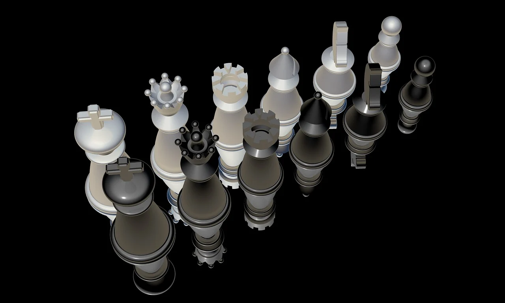

Sviluppo di una pagina web per il download dei report di sostenibilità di un’impresa del settore terziario

RESPONSABILITÀ VERSO L'AMBIENTE
IMPEGNO PER IL FUTURO


Sviluppo di una pagina web per il download dei report di sostenibilità di un’impresa del settore terziario